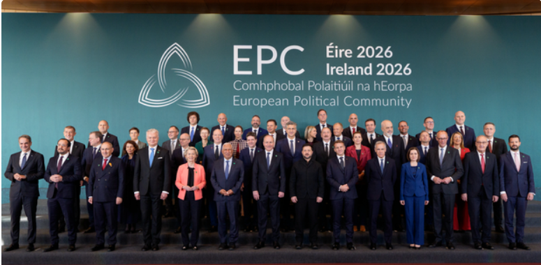
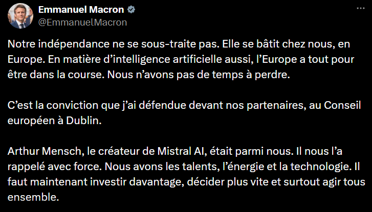

Les actualités d'Emmanuel Macron

9e sommet de la Communauté politique européenne.
Le Président Emmanuel Macron s’est rendu à Dublin, ce jeudi afin de participer au 9ᵉ sommet de la Communauté politique européenne.

Conseil européen informel consacré à l’intelligence artificielle.
Les échanges ont notamment porté sur l’accès des Européens aux modèles d’IA les plus avancés et sur la pleine mise en œuvre du cadre européen, en particulier de l’AI Act.
Regle d'or
Emmanuel Macron réfléchit à faire inscrire dans la Constitution une "règle d'or" budgétaire en janvier